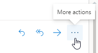

Outlook Plugin¶
Outlook allows for third-party applications to connect in order to execute database actions from emails. Odoo has a plugin for Outlook that allows for the creation of an opportunity from the email panel.
Configuration¶
The Outlook Mail Plugin needs to be configured both on Odoo and Outlook.
Enable Mail Plugin¶
First, enable the Mail Plugin feature in the database. Go to , enable Mail Plugin, and Save the configuration.
Install the Outlook Plugin¶
Download () the following XML file to upload later: https://download.odoocdn.com/plugins/outlook/manifest.xml.
Next, open the Outlook mailbox, and select any email. After completing this, click on the More actions button in the upper right-side and select Get Add-ins.
Tip
For locally installed versions of Microsoft Outlook, access the Get Add-ins menu item while in preview mode (not with a message open). First, click on the … (ellipsis) icon in the upper right of the previewed message, then scroll down, and click on Get Add-ins.
Following this step, select the My add-ins tab on the left-side.

Under Custom add-ins towards the bottom, click on + Add a custom add-in, and then on Add from file…

For the next step, attach the manifest.xml file downloaded above, and press OK. Next,
read the warning and click on Install.

Connect the database¶
Now, Outlook will be connected to the Odoo database. First, open any email in the Outlook mailbox, click on the More actions button in the upper right-side, and select Odoo for Outlook.

The right-side panel can now display Company Insights. At the bottom, click on Login.

Note
Only a limited amount of Company Insights (Lead Enrichment) requests are available as a trial database. This feature requires prepaid credits.
Tip
If, after a short while, the panel is still empty, it is possible that the browser cookie settings prevented it from loading. Note that these settings also change if the browser is in “Incognito” mode.
To fix this issue, configure the browser to always allow cookies on Odoo’s plugin page.
For Google Chrome, change the browser cookie settings by following the guide at:
https://support.google.com/chrome/answer/95647
and adding download.odoo.com to the list of Sites that can always use cookies.
Once this is complete, the Outlook panel needs to be opened again.
Now, enter the Odoo database URL and click on Login.

Next, click on Allow to open the pop-up window.

If the user isn’t logged into the database, enter the credentials. Click on Allow to let the Outlook Plugin connect to the database.

Add a shortcut to the plugin¶
By default, the Outlook Plugin can be opened from the More actions menu. However, to save time, it’s possible to add it next to the other default actions.
In the Outlook mailbox, click on Settings, then on View all Outlook settings.

Now, select Customize actions under Mail, click on Odoo for Outlook, and then Save.

Following this step, open any email; the shortcut should be displayed.

Using the plugin¶
Now that the plug-in is installed and operational, all that needs to be done to create a lead is to
click on the O [Odoo icon] or navigate to More actions and click on Odoo
for Outlook. The side panel will appear on the right-side, and under Opportunities
click on New. A new window with the created opportunity in the Odoo database will
populate.